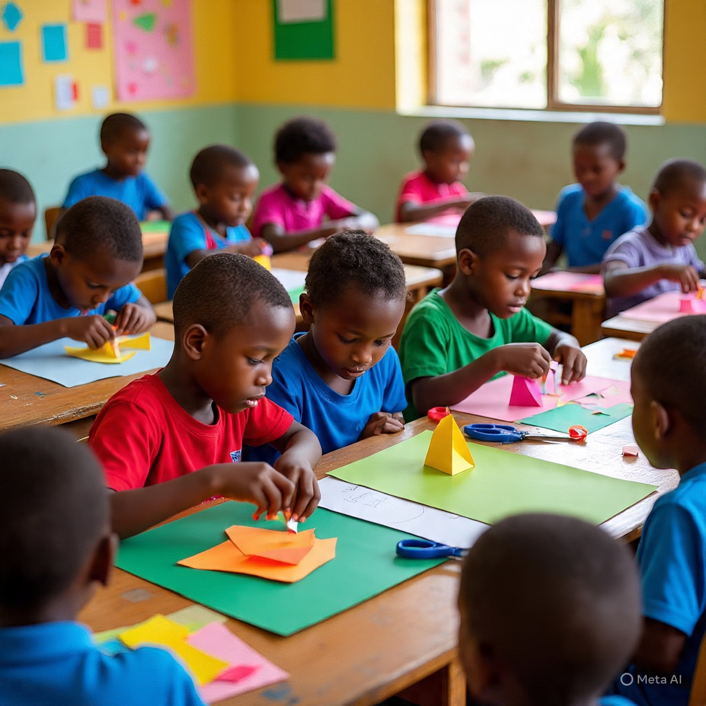

PAPER CRAFT
Meaning of Paper Craft
Paper craft is the art of using paper to create decorative or useful objects. It involves cutting, folding, gluing, tearing, rolling, or shaping paper to make different items by hand. Paper is one of the cheapest and easiest materials to use in craft work.

Paper craft helps to develop creativity, patience, and hand skills. It is also a fun and educational way to learn design, colour, and construction.
Types of Paper Craft
There are different types of paper crafts, depending on what the paper is used to create. Common types include:
- Card making – Making greeting cards for birthdays, holidays, and special events.
- Origami – The Japanese art of folding paper to form animals, flowers, and shapes.
- Paper cutting – Creating patterns or images by cutting paper into different shapes.
- Paper flowers – Making flowers using coloured or tissue paper.
- Paper weaving – Interlacing strips of paper to form mats or decorative surfaces.
- Paper modelling – Creating 3D shapes like houses, cars, boxes, and animals.
- Paper mache – Using wet paper and glue to mould shapes, such as masks or bowls.
Materials and Tools Used in Paper Craft
- Paper (plain, coloured, cardboard) – The main material used to create the craft work.
- Eraser – Used to clean off pencil marks.
- Scissors – Used to cut the paper into the needed shapes or sizes.
- Glue or gum – Used to attach paper pieces together.
- Ruler – Used for measuring and drawing straight lines.
- Crayons, markers, or colour pencils – Used to decorate or colour paper crafts.
- Brush – Sometimes used to apply glue neatly or for decorating.
- Stapler or pins – Used to join thicker paper together when glue is not strong enough.
- Hole puncher – Used to punch holes in paper for design or binding.
Methods of Folding in Paper Craft
- Square fold – Paper is folded to form a square shape, used for making boxes, envelopes, or flat card bases.
- Triangle fold – Paper is folded diagonally to form a triangle, used for making hats, origami animals, and decoration patterns.
- Rectangle fold – Folding paper into a rectangular shape, used for making cards, books, and paper wallets.
- Pleating – Folding the paper back and forth in even layers like pleats in clothes, used for making fans, skirts, and paper decorations.
- Fanfold (Accordion fold) – Sharp, even zigzag-style folding, used for making paper fans, concertina books, or pop-up shapes.
- Rolling – Paper is rolled or curled into a tube or coil, used for making paper beads, flowers, and scrolls.
- Twisting – Folding and twisting paper into spiral or curved forms, used for creating 3D figures and ropes in crafts.
Examples of Paper Craft Items
- Greeting cards.
- Gift boxes.
- Paper bags.
- Bookmarks
- Paper flowers.
- Decorative wall hangings.
- Animal models.
- Paper fans.
- Envelopes.
- Paper hats.
Importance of Paper Craft
- It Helps students to develop creative and imaginative skills.
- It Teaches patience, accuracy, and neatness.
- It Encourages recycling by using old newspapers, cartons, and scrap paper.
- It Provides a source of fun, relaxation, and entertainment.
- It Can be turned into a small business or source of income.
- It Helps in learning about shapes, colours, and design.
Care of Paper Craft Tools and Materials
- Keep scissors and sharp tools away from the body and others.
- Store glue and colours in a cool, dry place.
- Wash hands after using glue or colour.
- Always return materials and tools to their proper place after use.
- Work on a clean surface to avoid damaging the paper.